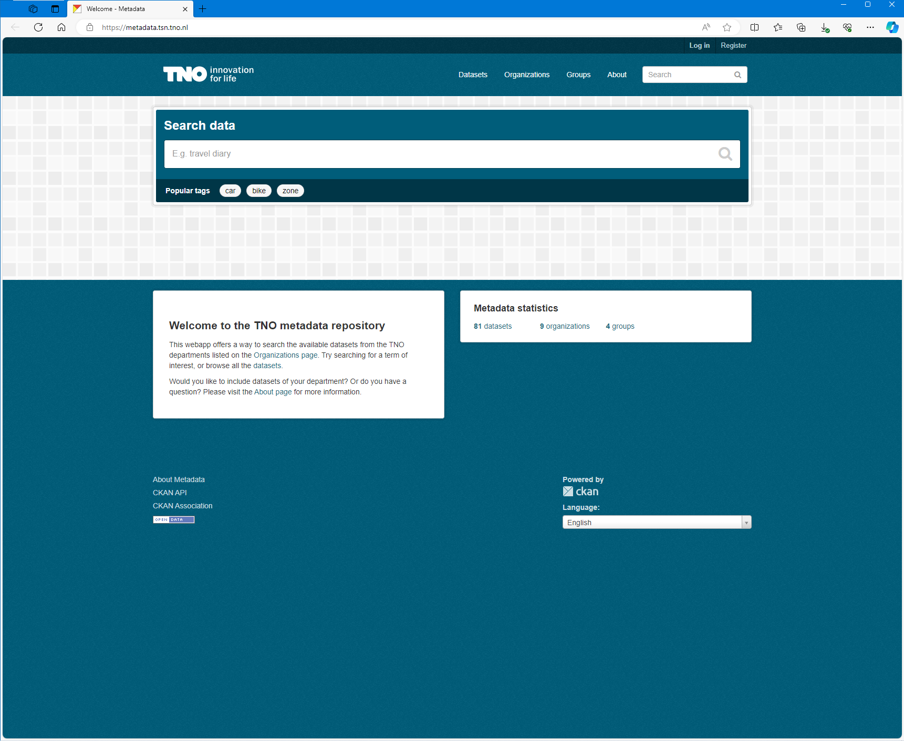

Dataportaal
Binnen TNO is er een grote behoefte om structuur aan te brengen in alle meetdata die we verzamelen. De vraag die we ons stelden was hoe we de vindbaarheid en herbruikbaarheid van data binnen TNO kunnen vergroten. Ons voorgestelde oplossing was het introduceren van CKAN; een open-source software oplossing om je metadata in te hosten. We hebben CKAN op een simpele manier, met gebruik van Docker en Azure, gerealiseerd.
